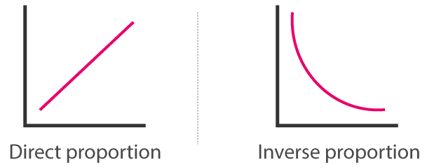

De què va això?
Aquest tema és el de proporcionalitat. Veurem què significa dir que dues magnituds són proporcionals, i quins tipus de proporcionalitat existeix. De moment, cal dir que en aquest curs només ens centrarem en la proporcionalitat simple, la composta la deixarem per anys vinents.
A continuació, explicarem què farem en aquest tema:
- Proporcionalitat Directa:
Entendre què és una relació directa: quan un augmenta multiplicant-se per un nombre, l'altre ho fa pel mateix nombre. Les treballarem en forma de fraccions equivalents amb una x. - Proporcionalitat Inversa:
En canvi, a les relacions inverses, si una magnitud es multiplica per a, l'altre es divideix entre aquest nombre (un es fa gran, l'altre es fa petit). Les treballarem en forma d'equacions de primer grau amb una x. - Constant de Proporcionalitat:
Quan volem realitzar un mateix tipus d'operació amb molts de nombres, és més útil trobar la constant de proporcionalitat, un resultat pel qual multiplicar o dividir cada valor, de manera molt més ràpida. - Problemes Variats:
Donats distints enunciats, heu de reconeixer si es tracta d'una proporcionalitat directa o inversa i calcular els valors que falten. - Repàs de Percentatges:
Repàs ràpid de percentatges, què significaven, com s'operava el % d'un nombre, i què tenen a veure amb les fraccions. - Augments i Disminucions Percentuals:
Aquests problemes quasi sempre parlaran de preus i €. Per posar un exemple, potser jo tinc una camiseta que valia un cert preu, i ha pujat un 10%, o baixat un 5%. Quin és el preu final? També es pot resoldre de manera inversa, sé el preu final i vull conèixer l'inicial. Els relacionarem amb la part de proporcionalitat anterior, i els resoldrem de manera ràpida (directament amb fórmules).